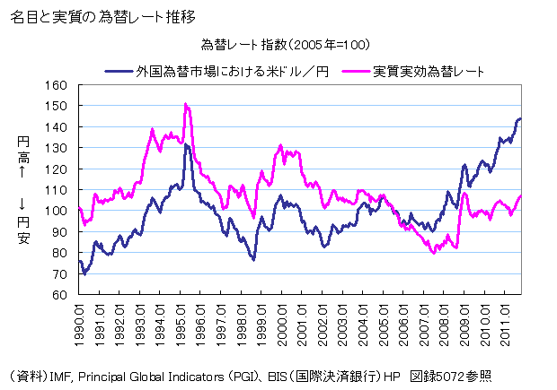
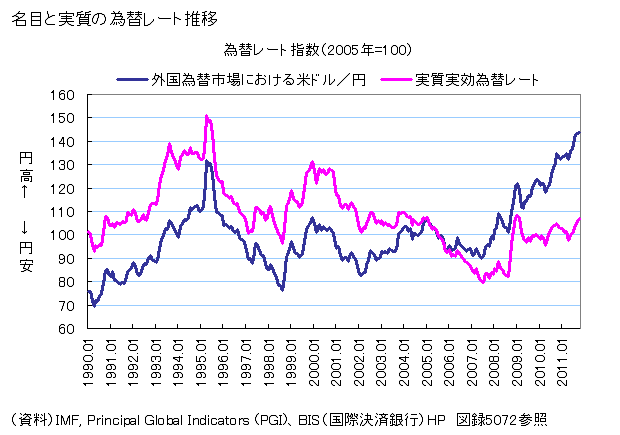

機械制御系の振動
(引用：https://youtu.be/trukC6G44ro)
建造物の振動
(引用：https://youtu.be/3mt6KpWvpbM)
化学反応系の振動（BZ反応1）
(引用：https://youtu.be/qSUjKvop2SI)
経済系の振動（為替レート）

(引用：https://youtu.be/trukC6G44ro)
(引用：https://youtu.be/3mt6KpWvpbM)
(引用：https://youtu.be/qSUjKvop2SI)
